本文为 2021 第八届华与华百万创意大奖赛参赛案例——蜜雪冰城案例解析。
蜜雪冰城案例解析“你爱我，我爱你，蜜雪冰城甜蜜蜜……”要说 2021 年中国最火爆的营销事件，应该就是这首蜜雪冰城的醒脑神曲了。今年 6 月份开始，它在全网实现了 210 亿次播放，相当于平均每个中国人看了十几次。而这“最火爆”的背后，其实隐藏着华与华“最深刻”的品牌思想：超级符号、文化母体与文化母体四部曲。
从超级符号“雪王”，到品牌歌曲再到营销活动，超级符号与文化母体四部曲理论，直接指导着蜜雪项目的品牌建设与管理工作，本文将带你全面了解这背后的方法与哲学。学习本文，您将学到以下 5 个核心知识点：1 、超级符号的设计体系，是取代 VIS 的新思想、新体系；2 、超级符号是通过精心选择传统符号，并依据购买理由进行改造，使其成为可以传播购买理由，并能注册的符号；3 、文化母体四部曲：寻找母体、回到母体、成为母体、壮大母体；4 、品牌风俗论：让品牌成为一方人民，甚至全人类的风俗；5 、所有的成功都是决策的成功，做决策要始终服务于最终目的，破心中“贼”。
1
超级符号是取代 VIS 的新思想、新体系2013 年，《超级符号就是超级创意》出版，书中有这样一句话：
2018 年 5 月，蜜雪冰城的创始人张红超与张红甫兄弟找到华与华：“我们也想要一个超级符号”。三个月后，我们的第一个动作就是用雪王替代了蜜雪原本的 logo 。
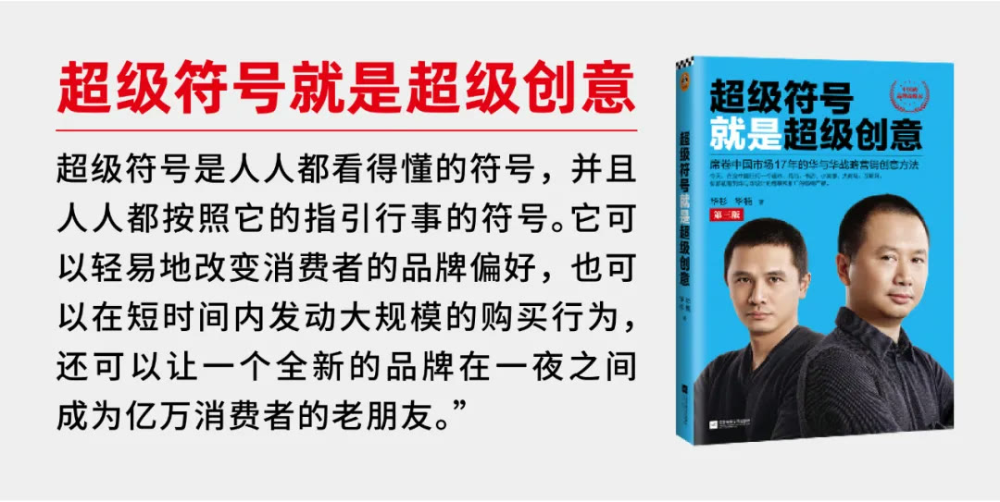
▲蜜雪冰城新旧 logo 对比
所有的设计都是符号编码，区别就在于编码是否超级。蜜雪原来的标识，难以描述，仔细看，似乎是一个字母 M ，一笔笑脸，一笔体现美味的舔出来的舌头，外面再加了一个对话框。设计的手法，抽象、复杂，叠加的概念较多，是典型 VIS 思维的“标识”。没有战略意图，有它不多，没它不少，没有人会注意它，也没有人会评论它，更不会有人传诵它。我们运用超级符号思维，为蜜雪创意设计了雪王：以雪人为原型，戴一顶皇冠显示行业地位，手拿冰淇淋权杖代表行业属性。看似简单的设计，实现了识别、记忆、购买和传诵的目的。
如果你仔细看华与华的案例，就会发现，在华与华前后，品牌形象表现为两个非常明显不同的阶段。
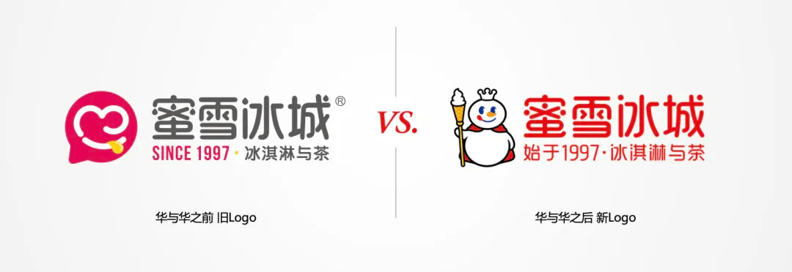
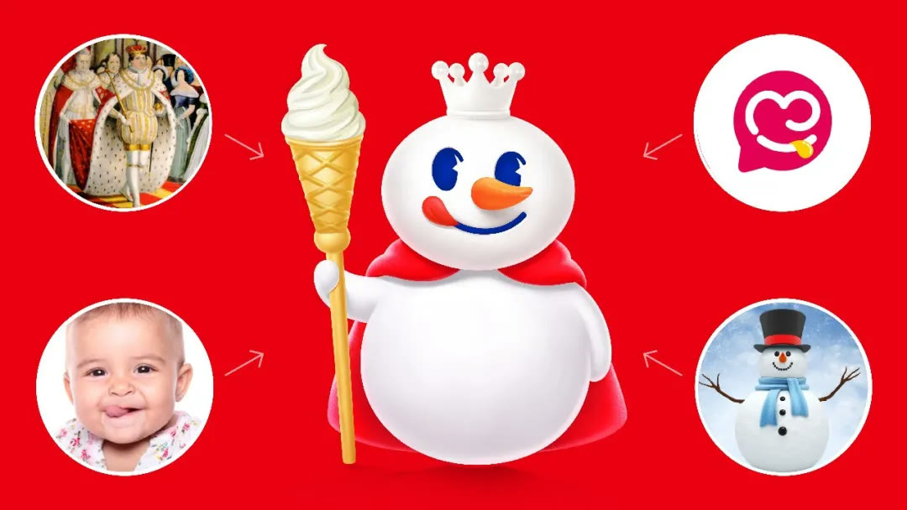
在华与华前，是模糊的；而在华与华后，是清晰的。在华与华前，是不可描述，或众说纷纭的；在华与华后，是众口如一的。
VIS 追求识别，却往往模糊了识别，超级符号追求行动反射，则同时实现了识别、记忆、购买和传诵的全部目的。
这就是超级符号的设计体系，它是是取代 VIS 的新思想，新体系。 Visual Identity System (视觉识别系统)，着眼点在于 Identity ，身份识别，追求独一无二。而超级符号所追求的，不仅是识别，而是促使行动，把消费者卷入，我们要卷入的行动，不仅是购买，还要替我们传播。这是两种完全不同的思想，完全不同的目的，所以也带来完全不同的结果。为了识别，就要追求独特，恨不得自己与别人 100 %完全不同。而卷入是追求熟悉，99 %相同之外，我们只要 1 %的不同。这里有一个底层逻辑，就是华与华的非竞争论， VIS 强调的是与同类竞争，超级符号则强调共性，要超级类同，一秒找到同类，用最类同的形象来做个性化的标签个性化、个性化的标志。药厂的标志是胶囊、是苯环；航空公司的标志都是翅膀；银行的标志都有孔方兄。因为一个银行的标志，是和街道上的其他的一切信息竞争，是与一切行业的所有信息竞争，而与其它银行不存在竞争。
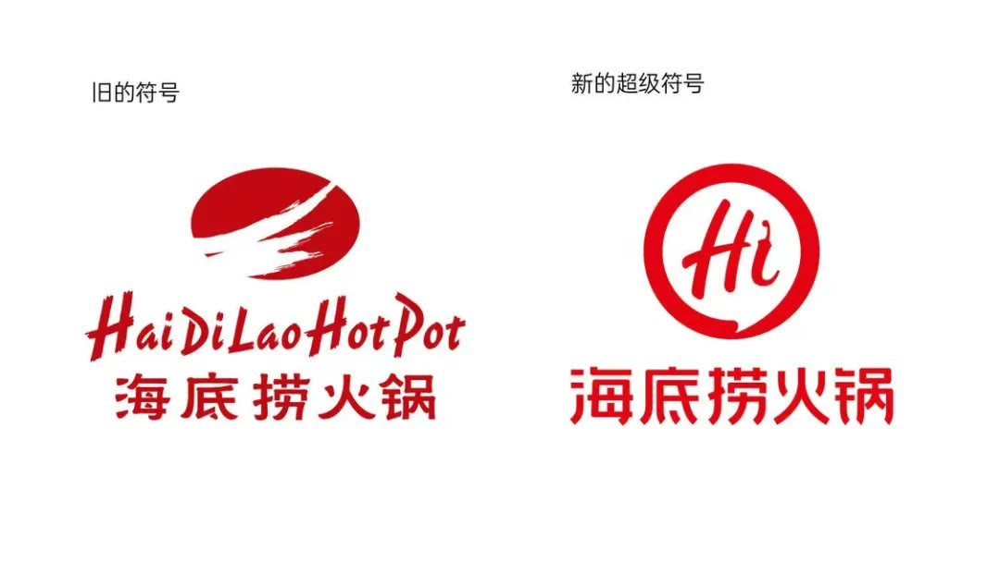
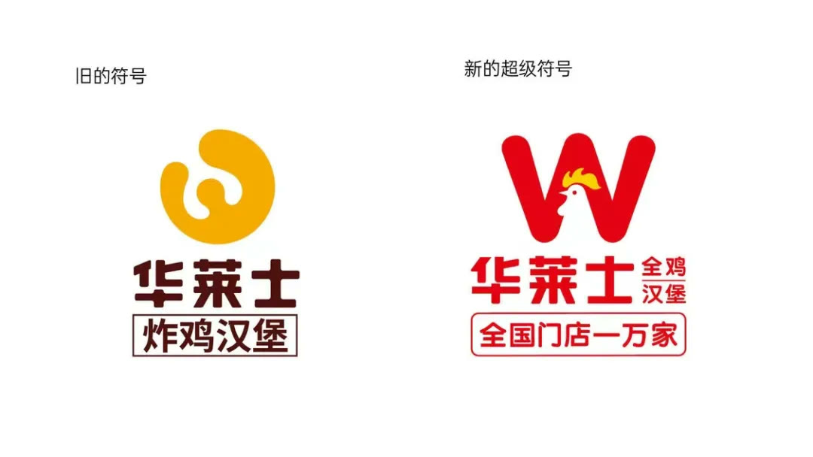
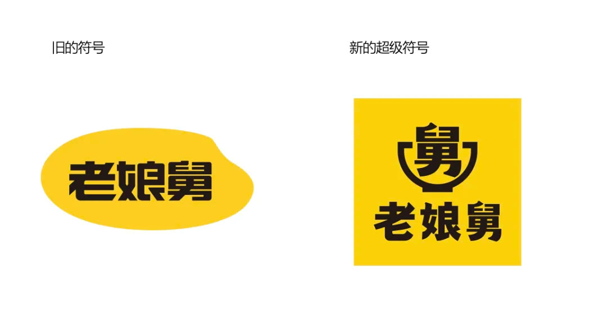
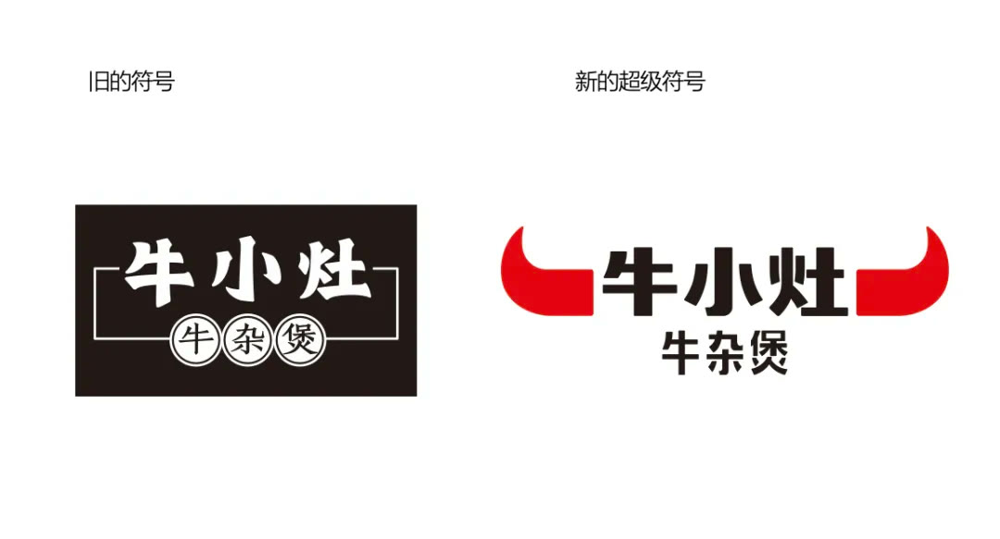
▲图片素材来源于网络
雪王的创意过程就是提炼出文化母体上的元素，通过改造最真实日常的预制件、标准件来原创。雪王是独一无二的，没有一个雪人和他一模一样。但是，不一样的部分只有 10 %，另外 90 %都和其他雪人一模一样；而不一样的这 10 %呢？分别是皇冠、权杖和权杖头上的冰淇淋，它们又分别和其他皇冠、权杖和冰淇淋一模一样。我们尽量使用跟所有人一模一样的元素，以确保我们要传达的信息能得到所有人的迅速理解。
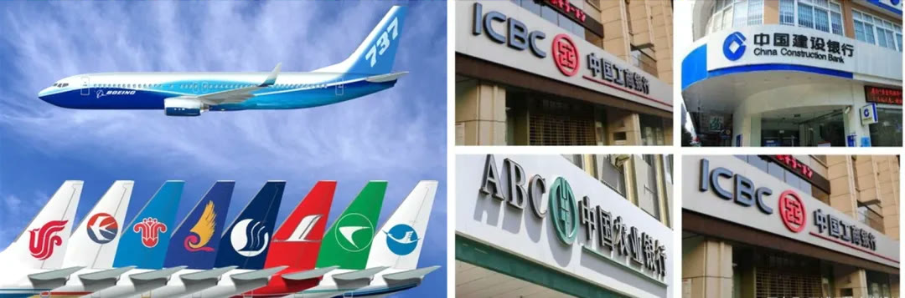
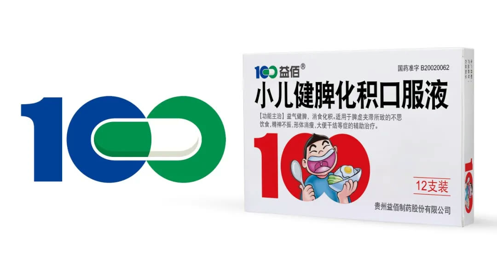
蜜雪的雪王是华与华以超级符号设计，实现识别、记忆、购买和传诵的标杆案例。而这背后的底层逻辑，源自华与华最深刻的思想：文化母体与文化母体四部曲。
2
从品牌文化到文化母体思想什么是品牌文化？我们先来看《现代汉语词典》对文化的定义：文化是人类历史上形成的一切物质财富和精神财富的总和，有时特指精神财富。品牌文化，就是在人类文化宝库中寻找，并嫁接人类文化，为我所用，就能获取这一精神财富。比如西贝的超级符号，是找到了“ I ❤️ NY ”的品牌文化；我爱北京天安门正南 50 公里，则是寄生于《我爱北京天安门》这首歌。
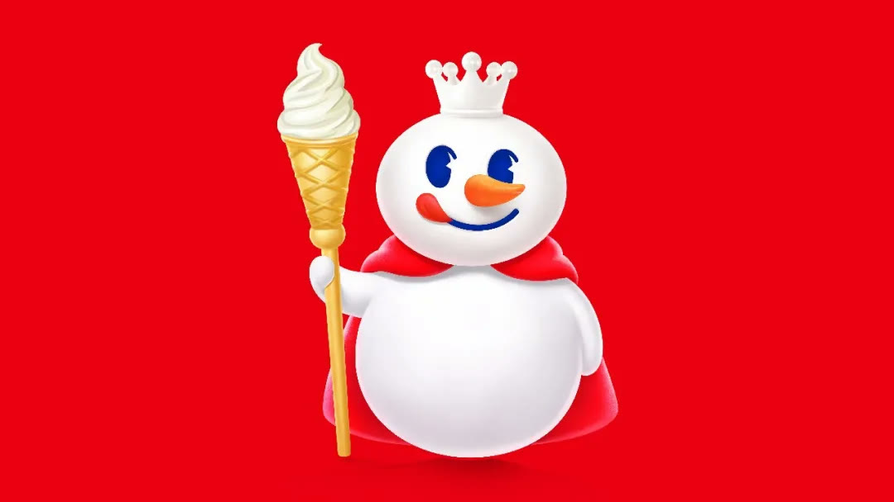
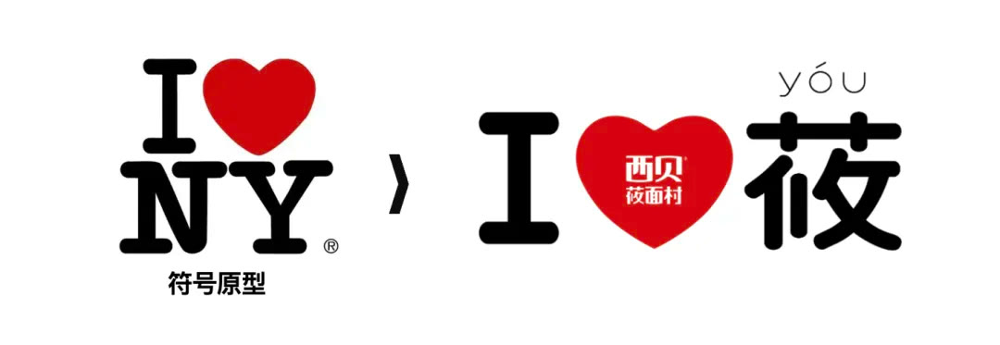
田七牙膏，拍照大声喊田七，是将品牌植入消费者的生活，拍照的时候不喊“茄子”，喊“田七”。广告片一播出，全国人民照相都在喊田七，讲全国人民的生活卷入到品牌的戏剧中，自发演绎、自动传播。
这一招一以贯之，用到现在发展成华与华方法的文化母体理论。所以你能看到，华与华的创意都是做大家最熟悉的、最司空见惯的东西，找到最平常的、最普遍运用的符号，然后进行私有化的改造。这基于同样的底层逻辑：沟通基于共同的文化契约，因为我们在这些司空见惯的符号上有文化契约，每一个人都认识它，每一个人都能理解它，所以我们才能用它来沟通。在文化母体理论体系下，我们完善了对超级符号的定义：超级符号就是通过精心选择的传统符号，并依据购买理由进行改造，使其成为可以传播购买理由，并能注册的符号。这个定义有三层含义：
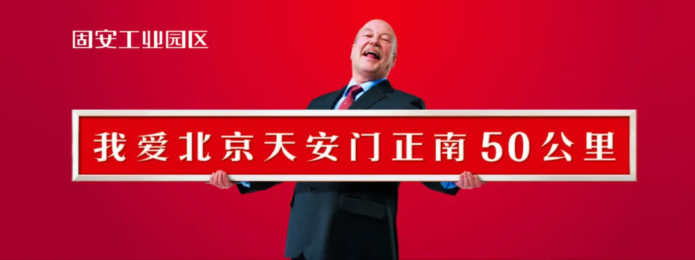
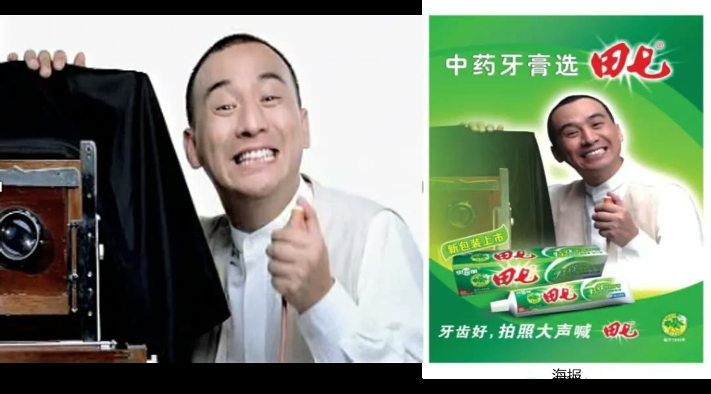
1 ）超级符号源自传统符号，其目的是占据传统符号的价值、意义、品类感、消费者偏好；2 ）依据购买理由（或品牌形象的需要）进行改造，使其能高效传播购买理由或品牌形象；3 ）可以注册，超级符号是私有财产，是品牌资产，能注册最好，不能注册就要将其在消费者心目中打造成具有排他性的品牌资产。
蜜雪原来的品牌标识是一个抽象的符号，不可描述，也没有商业价值。我们找到了一个全球性的文化母体雪人，它是全球共同的文化契约。提炼出雪人身上核心的元素，也就是预制件、标准件：两个雪球、一个胡萝卜鼻子。然后依据购买理由进行改造，用皇冠代表它的行业地位，用冰淇淋权杖代表行业属性，最后加了红色披风让它可以作为标识用在各类场景中。这就诞生了一个可以注册的超级符号，成为蜜雪的私有财产。同时创造了熟悉、偏好和购买欲，而且是国际化的，全球消费者都能为它买单。
3
文化母体四部曲：微信红包的成功路径寻找文化契约、寻找超级符号的方法，就是文化母体四部曲：寻找母体、回到母体、成为母体、壮大母体。2014 年，微信以新年红包打通移动支付，就是文化母体四部曲的标准案例，不过，这不是华与华的案例。
但是，正如克劳塞维茨所说：“天才不需要理论，但是理论家需要天才，因为理论家要把天才的做法总结成理论。”我们就用文化母体四部曲的理论来总结微信红包的案例：
▲图片素材来源于网络
第一部，寻找母体。中国人在新年、春节会给老人送红包，会给小孩子发红包，长辈也会给晚辈发红包。这是一个母体行为，微信找到了这个母体。第二部，回到母体。使用母体符号，也就是设计了微信里的红包图标。母体的戏剧，真实日常、循环往复，有它约定俗成的时间、仪式、道具，特点是不可抗拒、必然发生，发生的形式是集体无意识、自发卷入。现在，剧本、时间、仪式、道具都有了，全国人民以集体潜意识自发卷入，微信一举逆袭支付宝，成为移动支付老大。第三部，成为母体。微信红包取代了物理的红包信封，成为红包的新母体。第四部，壮大母体。红包文化被微信弘扬壮大了，现在不是过年过节才发红包，而是已经发展到没有什么问题是红包不能解决的地步，有喜事就在微群发红包，开会迟到也要发红包。文化母体四部曲，后两部非常重要！就是成为母体，壮大母体，因为到了这一步，就已经让品牌成为人类的风俗，活进文化母体，活进历史和未来了。在华与华方法，我们称之为“品牌风俗论”——让品牌成为一方人民，甚至全人类的风俗。
4
成为母体、壮大母体：雪王的生养之道从雪人到雪王，是寻找母体、回到母体的过程。由此，品牌就有了一个强有力的“符号代言人”，这个符号所代表的一切价值，就直接为我所用。
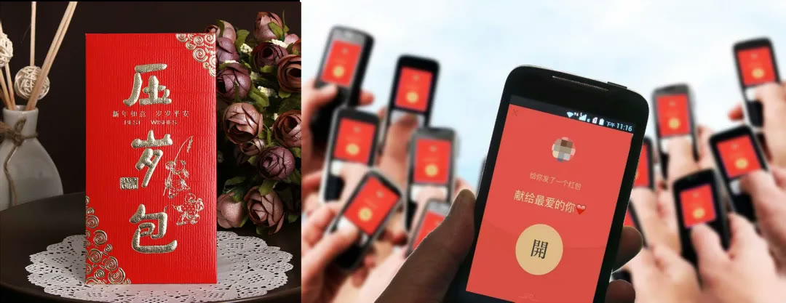
然而，找到母体容易，成为母体难，不是每个品牌都能幸运地养大属于自己的超级符号。俗话说：“孩子只有生不出来的，没有养不大的。”而养符号恰恰相反，生下来容易，养活却很难，养大更是难上加难！今天，雪王四岁了。我们看到它寄生到人们的生活习惯中，成为人们生活的一部分；甚至寄生到人类文化中，成为人类文化的一部分。实现这一步，蜜雪用了四年，其中的核心关键在于，对于元媒体的开发与运用。营销传播的传统理论，基于一个前提：将商品信息通过媒体传递给人。一头是商品，一头是人，中间是媒体。但是商品和人，本身就是最好的媒体，华与华称之为元媒体。
商品作为元媒体，商品即信息，包装即媒体，要通过创意设计，开发放大商品的媒体功能。人作为元媒体，关键是发动播传，实现“人传人”。在商品和人之间的，那些需要花钱购买的媒体，华与华称之为延伸媒体。这来自麦克卢汉的观点：媒介是人的延伸。
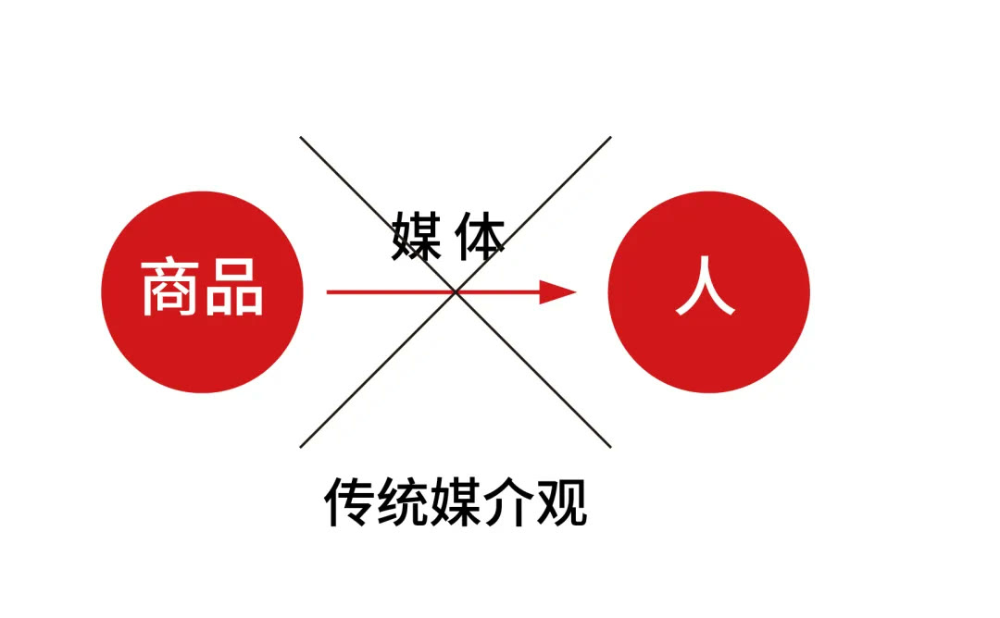
人们一说推广，就在延伸媒体上下功夫，花大价钱投资，却没有对元媒体进行任何规划，这是普遍的问题。商品即信息，包装即媒体。商品元媒体，对于消费品来说，是包装；对于蜜雪来说，是店面，包括店招、店面和店内。我们来看蜜雪冰城的门店在华与华前和华与华后的对比：华与华前的门店，是静默无声，不发一言；华与华之后，就热情似火，连珠炮似的在对消费者说话。前者完全放弃了元媒体功能，后者把媒体功能运用到极致。
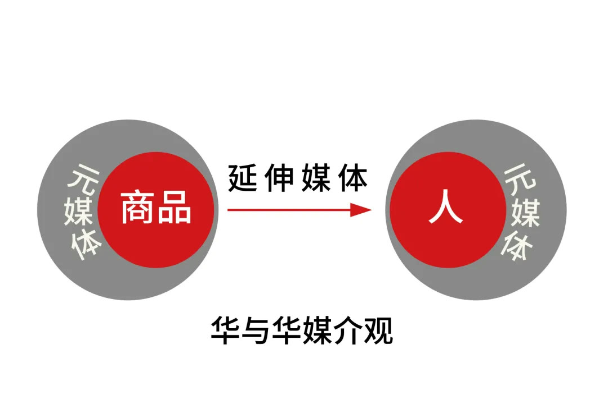
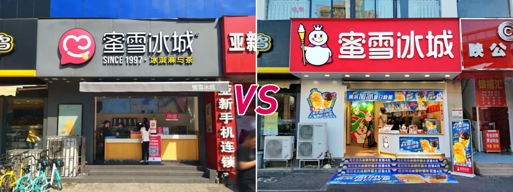
除了门店，还有与消费者的每一个接触点，都是媒体。雪王应用在奶茶杯、封口膜、店员服装、周边礼品、产品包装、传播物料等所有元媒体上，实现全面媒体化。
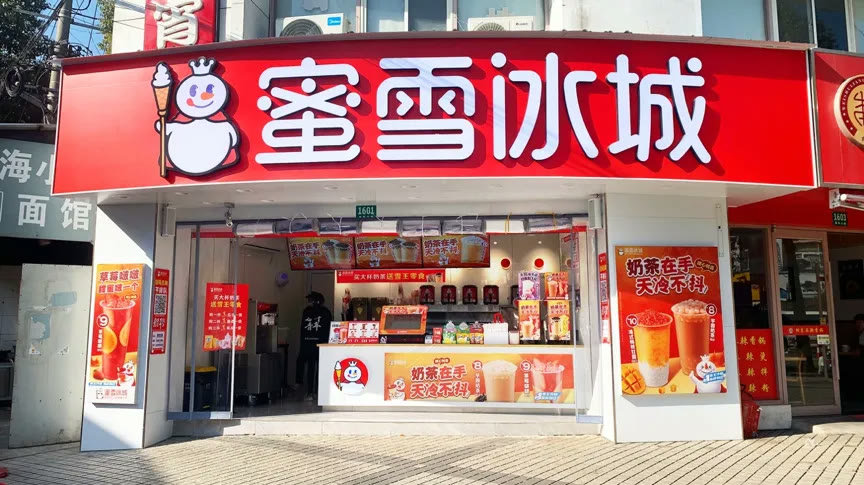
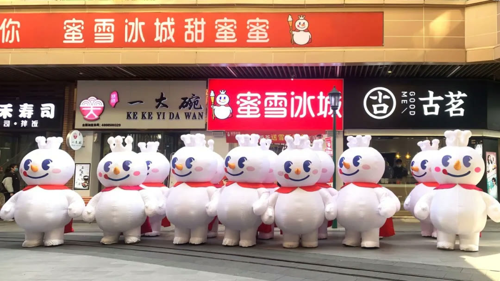
所以，为什么华与华的所有的设计，都是具象的、可言说的。因为只有这些用口语都能描述出来的符号，才能被转述，能被转述，才能发挥出另一个元媒体——人的传播功能，形成播传。蜜雪之前的品牌标识，就不可言说，而雪王就可以言说：“一个披着红斗篷的雪人，带着王冠，手拿权杖，权杖头是一个冰淇淋。”品牌角色，先“活起来”才能“火起来”。元媒体之外，通过以下动作，蜜雪真正把雪王玩活了。
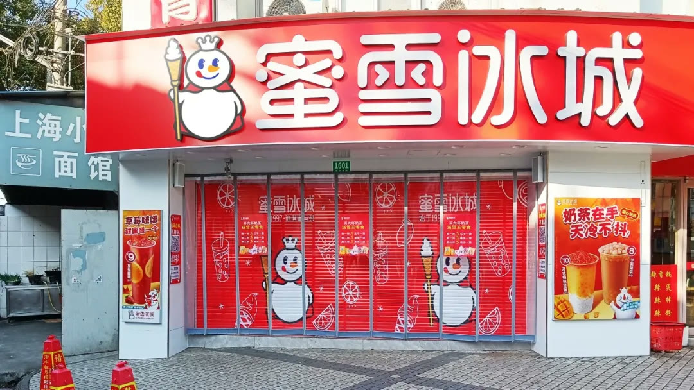
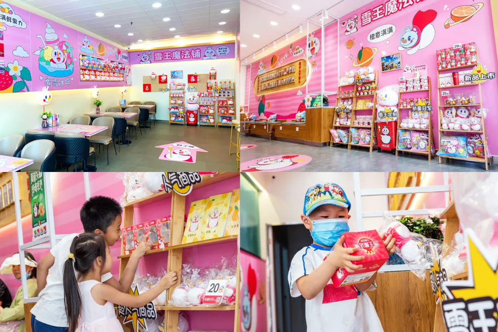
在冰淇淋音乐节，雪王成为舞台的中心，且组成了乐队，站成现场一条风景线。更关键的是，连音乐节的标志都启用了唱歌雪王，真正把雪王的形象深入人心。
为了激发全民玩转雪王，为雪王举办了雪王杯创意大赛。创意在民间，两届创意大赛收到了两万多幅雪王作品，举全国粉丝之力，实现了百变雪王。
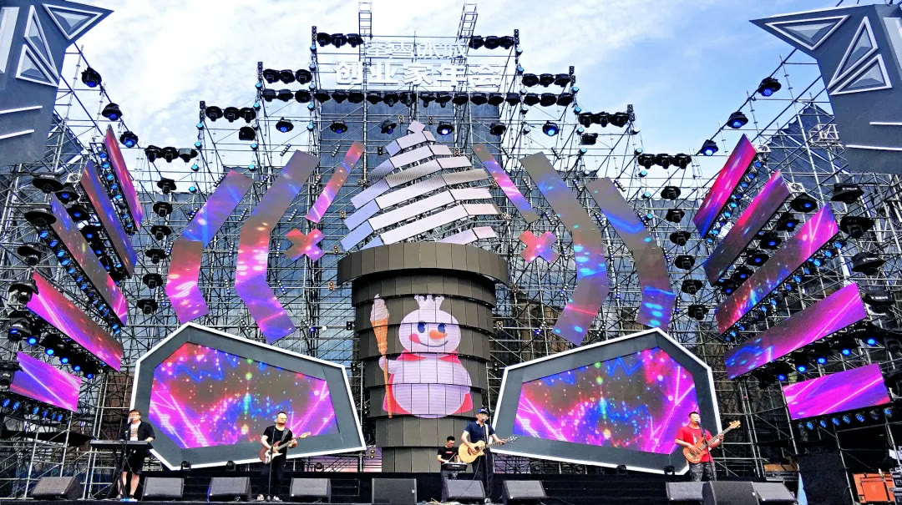
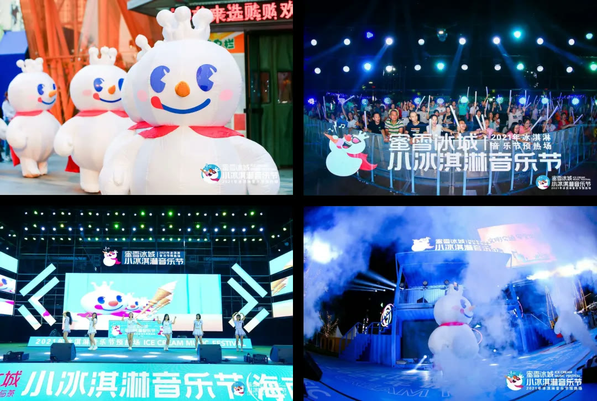
举办雪王巡回展出，当 100 个雪王在广场上出现，市民们纷纷驻足拍照、互动，尽显重复和规模的力量。
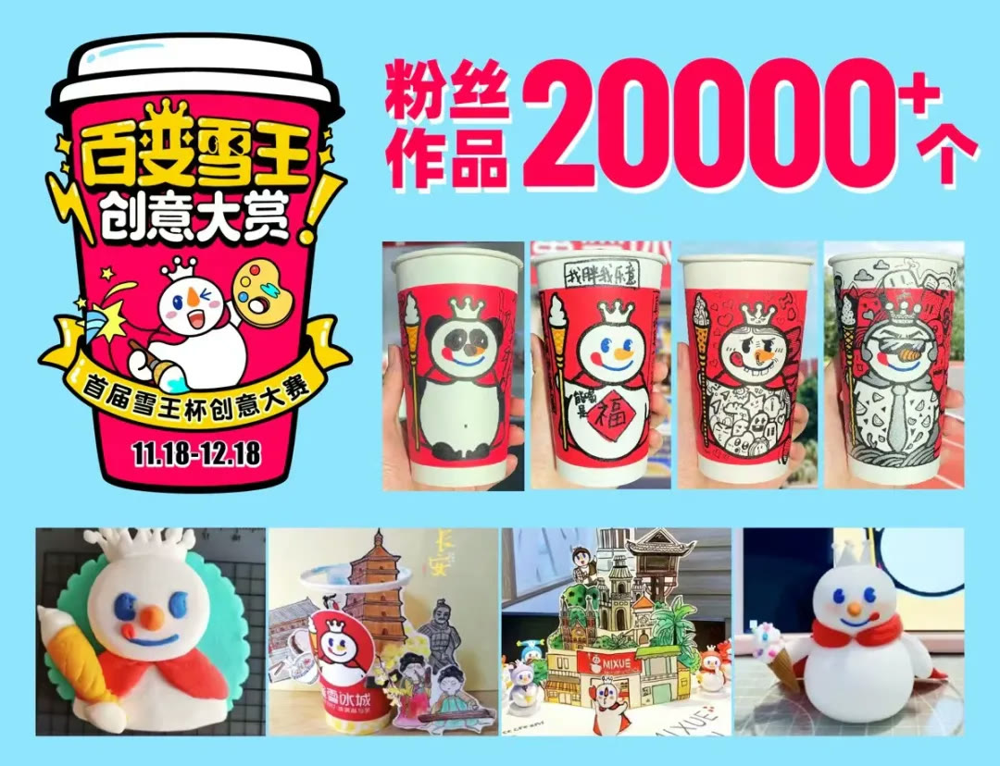
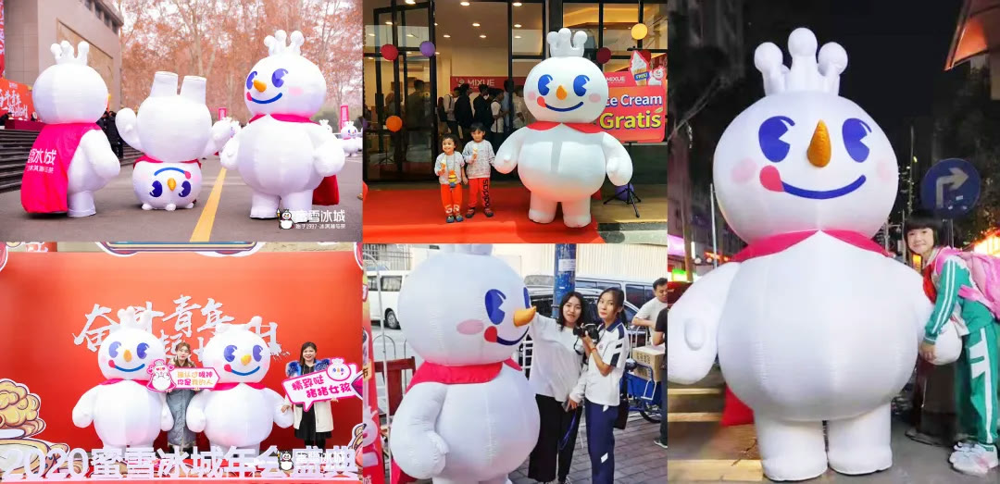
我们说，制定符号标准的人，就是符号的垄断者，就是符号的代言人。就像可口可乐制定了圣诞老人的标准，我们相信终有一天，雪王会成为人类文化中对于雪人的标准。
▲图片素材来源于网络
5
蜜雪“醒脑神曲”的文化母体原理寻找母体、回到母体、成为母体、壮大母体，文化母体四部曲，同样适用于品牌谚语和品牌歌曲的创作。“我爱北京天安门正南 50 公里”、“爱干净，住汉庭”、“新东方，老师好”都是典型的运用文化母体的思想，创作品牌谚语的例子。
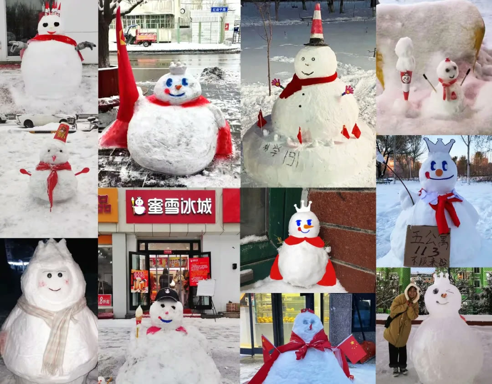
在线上，网友自主发起了二次创作，诞生了 14 个国家、 20 余种语言的版本，堪称一场“翻唱盛世”；在线下则衍生出各类“社死”活动，网友们自发去门店唱歌换免费冰淇淋，甚至自带乐器、自编舞蹈。我们从词、曲两方面来分析这首歌的成功。首先是词：
上文我们讲到，超级符号是使用人类文化的预制件来进行编织，这些预制件反映在图形上，是母体元素、超级符号；而在语词上，就是母体词语。“爱干净，住汉庭”能成功，因为“爱干净”是母体词组，母体行为，如果改成“更干净”，“更干净”就不是母体词组，不是母体行为。“好老师在新东方”，好老师在哪不是母体词组，改成“新东方，老师好！”，因为“老师好”是母体词组，而且是我们从小上课的一个超级母体行为。
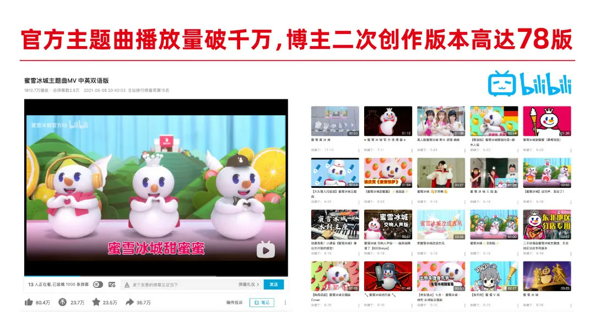
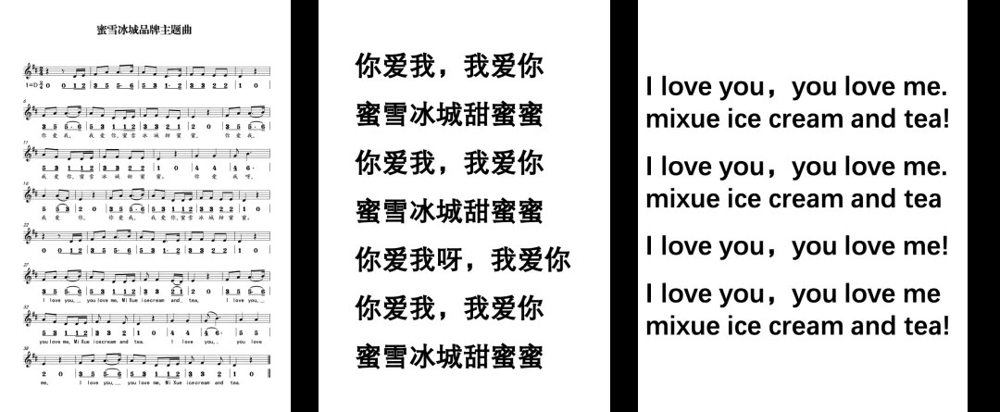
“你爱我，我爱你，蜜雪冰城甜蜜蜜”， 其中，“你爱我”、“我爱你”、“甜蜜蜜”，都是母体词组。
这个非常重要，“我爱你”是母体词组，有文化原力，“我十分爱你”就不是，没有原力，“我十二万分的爱你”也不是，一定要使用固定组合，预制件。“你爱我”、“我爱你”、“甜蜜蜜”，三个母体词组加一个品牌名，三匹马拉一辆车，那辆车的名字“蜜雪冰城”还有一个“蜜”字，跟“甜蜜蜜”形成叠音和韵律。
创作蜜雪品牌歌曲时，项目组也曾贪心编写更多文案，总试图在一首歌的 15 秒时间里，说更多，比如“冰淇淋、柠檬水，珍珠奶茶来一杯”，心心念念受众能记住更多，后来都被华板砍掉了，只留“你爱我，我爱你，蜜雪冰城甜蜜蜜”这一句。
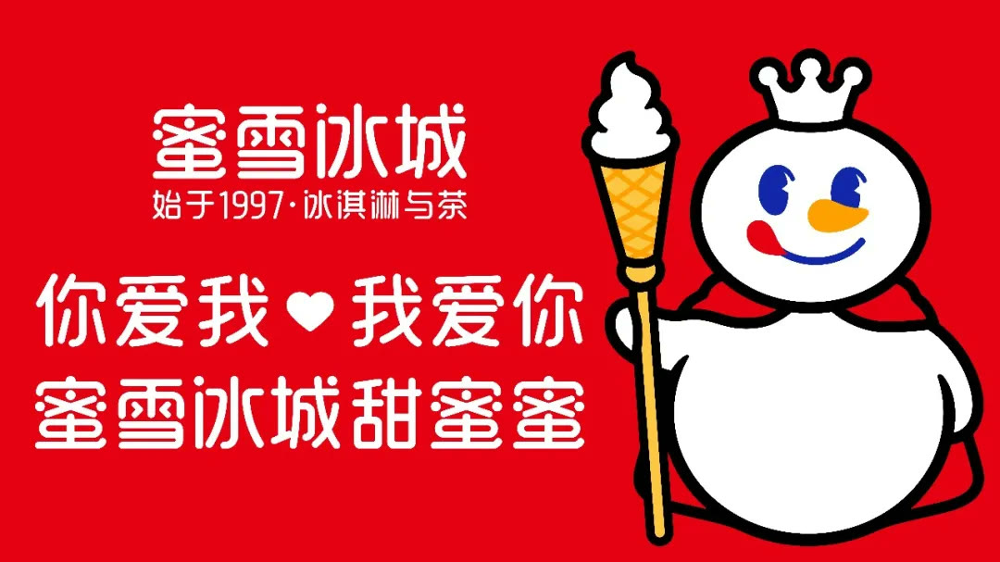
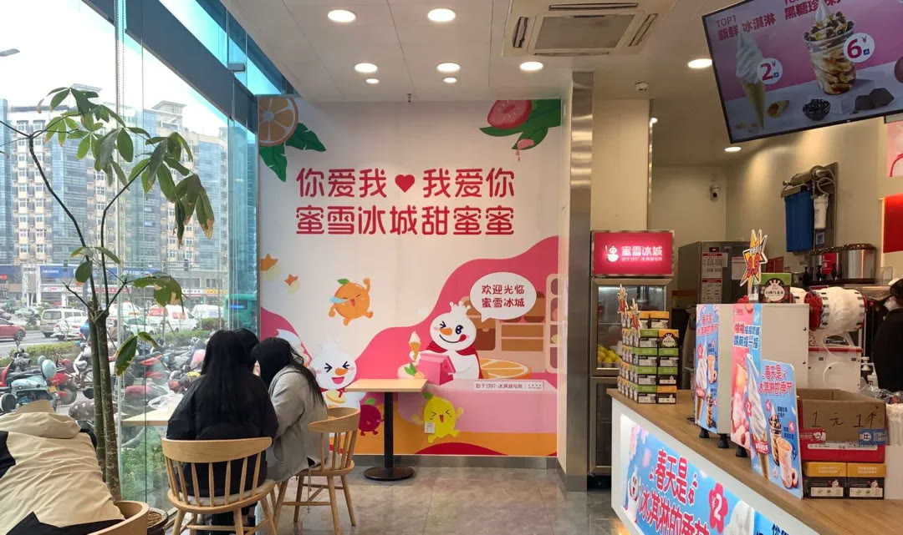
事实证明，有舍才有得，不贪心才能抓住核心。我们再来看曲：
我们说，超级符号的方法，不仅仅是视觉的符号，也包括对听觉、味觉、嗅觉、触觉的符号进行编码。
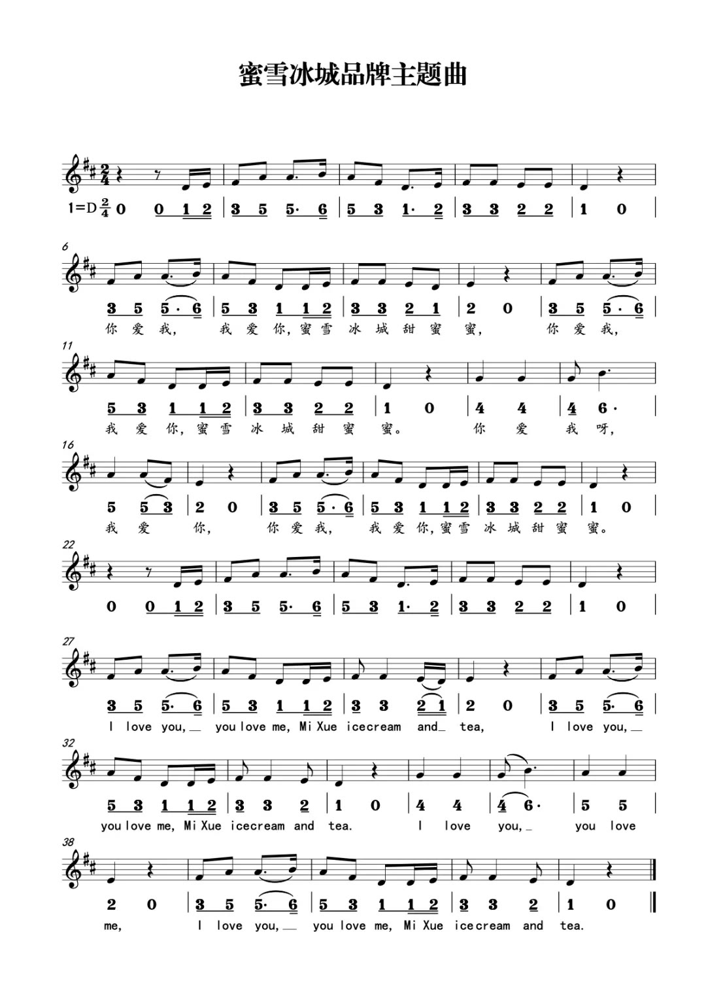
在创作这首歌时，我们不会自己去创作一首曲子，而是寻找文化母体。在为蜜雪冰城寻找音乐符号时，我们有 3 大原则：
1 ）耳熟能详，已经进化为声音符号。找到全世界脑海里那首本来就很熟悉的旋律，你听到就能哼唱，只是不知道在哪听过，这就是超级音乐符号。2 ）国际化品牌，就要国际化的品牌歌曲。蜜雪已经在印尼、越南、菲律宾等境外拥有数百家门店，这首歌需要保证放在全球都能听得懂。3 ）足够经典，才能永远年轻。“品牌年轻化”的秘诀，就是选用经典文化符号，相反，如果你要“用年轻人的方式”和他们沟通，那就是搔首弄姿，成了怪叔叔。记住！年轻人都会变成跟我们一样，而我们不会再年轻。
基于这 3 大原则，最终我们找到了来自美国作曲家史蒂芬·福斯特于 1847 年所写的极具美国南部风格的经典乡村民谣《 Oh ! Susanna 》，通过改编，给品牌歌赋予醒脑的“天赋”。
随后。经过全国上万家门店一年的播放，加上网上这 210 亿次传播，蜜雪壮大了这首歌，更多人会唱，还把苏珊娜这首歌又翻了出来。一首美国的乡村民谣，在它诞生 175 年后，通过一个中国的品牌，再次走进大众视野。即使在印尼，店员和顾客们也能过耳不忘，随口哼唱。
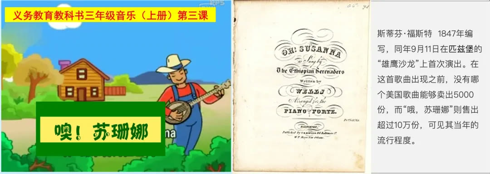
蜜雪的主题曲火了，有人会问，接下来做什么？我们的回答是：在第一个推广阶段，让它先流行一百年；然后进入第二阶段，一字不改，再让它流行一百年，以保持不变，不断推进品牌年轻化，吸纳年轻人，让全世界每一代年轻人，都会唱同一首蜜雪冰城歌。之后，就进入第三阶段，一字不改，流行三百年。
6
形成营销日历，形成品牌生物钟超级符号和文化母体四部曲的指导下，我们同样为蜜雪创意了品牌营销活动，并一年一年固化为蜜雪的营销日历，成为品牌资产。很多企业做营销活动，都是“逢节就过”。过节了就搞个活动，也不知道为什么做，更没有形成积累。华与华方法认为，品牌一定要形成自己的营销日历，并且要年年做，给品牌形成固定的营销节拍和主题，重复积累，把营销活动也做成品牌资产。形成了营销日历，就形成了品牌生物钟。在内部，形成所有员工一年的工作节拍，自动重复、精益求精；在外部，则是在顾客脑海中形成消费生物钟，到时间他就来。三年时间，我们与蜜雪团队一起创意、固化了三大营销活动， 520 、福袋节、雪王杯创意大赛。
“今年 520 ，去蜜雪冰城领情侣证”是典型的找到母体、回到母体、成为母体、壮大母体四部曲的体现。力出一孔，蜜雪的品牌谚语是爱，活动创意也围绕爱，我们找到了“结婚证”这个母体道具，找到了“领证”这个母体词组，还原了一个结婚领证的母体场景，让所有的情侣在 520 这天到蜜雪领情侣证。这个活动已经办了两届，线上线下同步举行，共颁发情侣证 200 多万张，蜜雪见证了上百万对情侣的爱与甜蜜。

“蜜雪福袋节，把福带回家”，则是寄生在“福”文化这个母体上，喝蜜雪，拿福袋，一到过年，就给顾客带节奏。
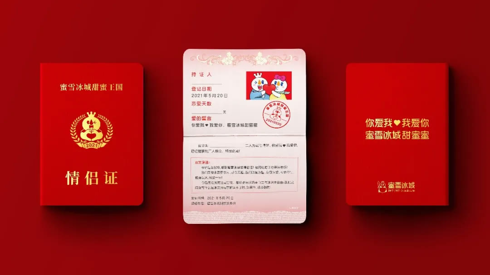
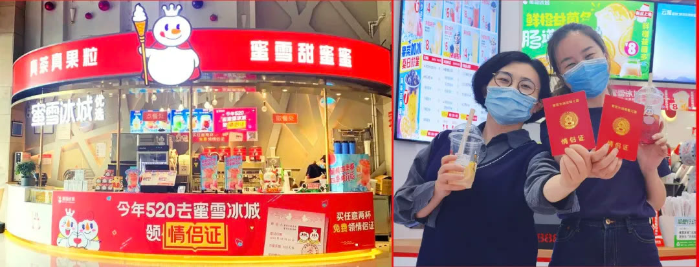
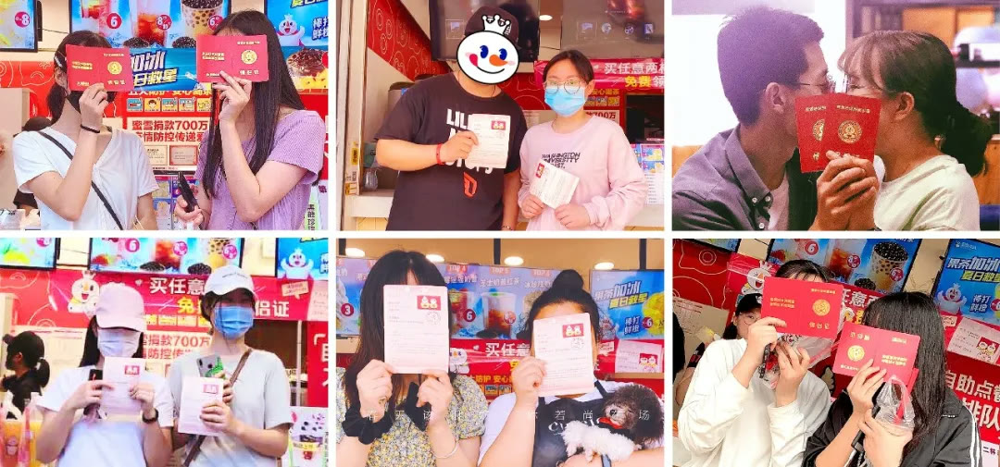
“百变雪王，创意大赏”，雪王杯创意大赛激发了全民创作雪王的热情，这也让它成为全国人所熟知的品牌形象。
用文化母体思想做营销活动，能将活动寄生在强大的母体上，卷入消费者行动，像超级符号与品牌歌曲一样，发动消费者参与、记忆、传播。
7
所有的成功都是决策的成功
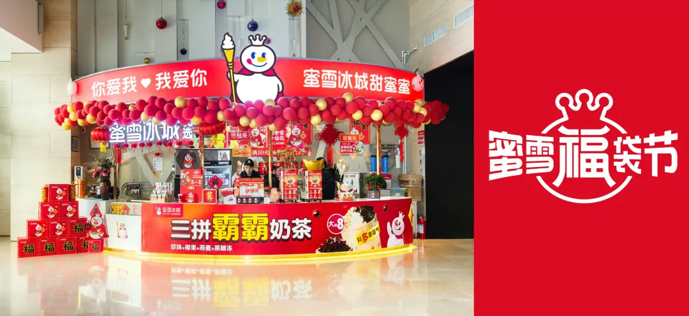
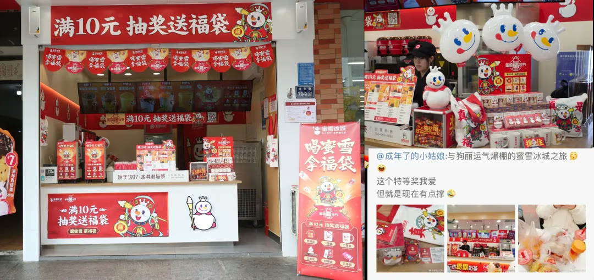
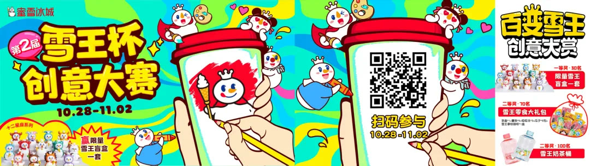
华与华有个愿望，要在 21 世纪中国十大百年品牌形象中，至少占有三席。蜜雪冰城的雪王是我们最看好的作品之一，短短三年，它已经成为中国著名的品牌角色。
但是，三年前，雪王刚刚诞生时，也曾遭到反对意见，反对的理由是“太土，太LOW ，没美感，没档次”。张与张兄弟出于一个朴素的道理，既然请了老师，就听老师的，把这个方案确定了。一年后， CEO 张红甫先生站在一家新装修的门店前，回忆起一年前品牌决策会的那个晚上，他说：“当时差点 Pass 了你们的方案，现在想想一身冷汗，如果当初放弃了，现在的这一切就都没有了”。
所有的成功，都是决策的成功。蜜雪是幸运的，靠着张与张兄弟的坚持，买回了他们在华与华应该得到的东西。华与华也是幸运的，遇到张与张兄弟，本身就是一种运气。但华与华每年都有那么两三个叶公好龙的客户，付了钱见到方案却感觉“太土，太LOW ，没美感，没档次”，宁肯钱不要了，也要停止合作，这是非常痛心的损失。那么问题来了，为什么大家都认为“太土，太 LOW ，没美感，没档次”？因为这是一种病，一种通病，也是一种比较“高端”的哲学病。比如蜜雪原来的标识，有人感觉这是“设计过的”，就是大家说的“设计感”；而看到雪人，会觉得说我从小在图画书上看到的东西，怎么搬过来就成了“设计”呢？这“没设
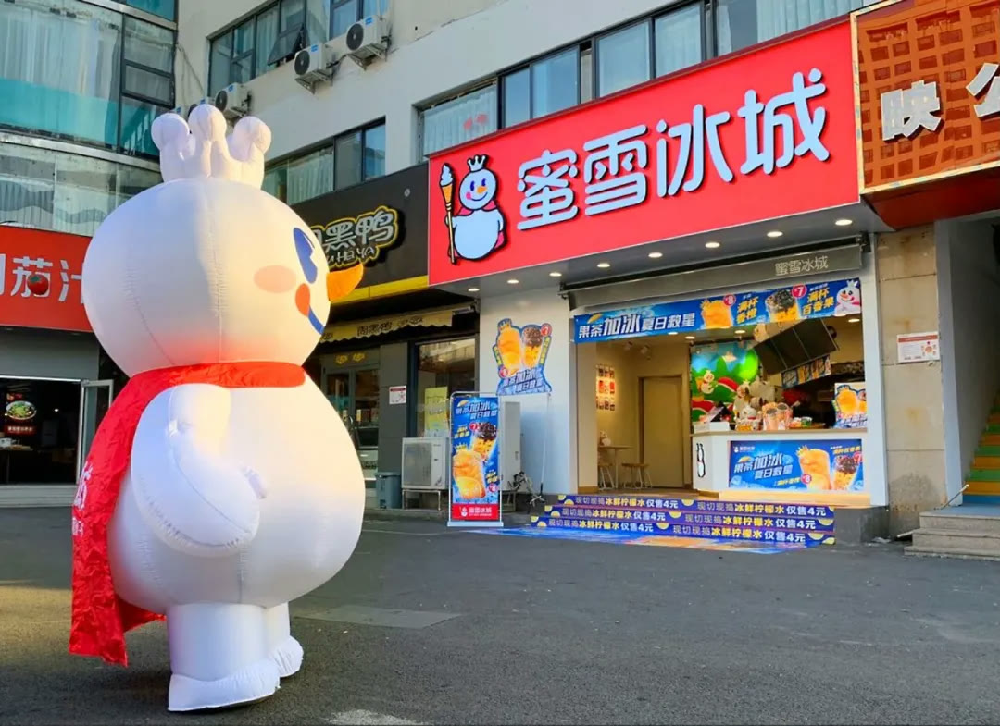
计”啊！所谓的“设计感”是一个最糟糕的词，设计应该让人感受商品，不应该让人去感受设计。大道至简，但是，人们受不了简单，所以老子说：“上士闻道，勤而行之；中士闻道，若存若亡，下士闻道，大笑之。不笑不足以为道也。”维特根斯坦说：“我们从小受的教育，就是我们不应该欣赏我们能理解的东西。”
一个东西，一旦自己看懂了，就觉得不应该表现出自己对他的欣赏。人们的所谓“审美”，并不是真的在审美，而是在进行对自己的“印象管理”，管理自己在别人心目中的印象。所以，审美的共识只有一个，就是皇帝的新衣，皇帝明明什么都没穿，但是每个人都说皇帝的新衣美！为什么呢？因为他担心自己要是说他不美，就会被当做异类。人的意识、潜意识、表达和行为，是四个完全不相干的东西。超级符号，是运用人类潜意识的艺术，一个消费者走在街头，看见蜜雪的门店，他不会有意识的去评判她的美丑，他的潜意识已经让他喜爱，而且愿意购买。但是，当他作为一个评论家坐在会议室看一个设计方案的时候，他的意识是在思考：“我应该表示赞同还是反对？我应该发表一个什么样的看法，让他们觉得我是一个有观点，负责任的人？”所以，他的任何思考和表达，都和专业意见无关，都是在做自己在别人心目中的印象管理。王阳明说：“破山中贼易，破心中贼难。”我们走多少弯路，做过多少错误的决策，都是因为心中的一些“贼”，这些“贼”，就是一些错误的思想，莫名的纠结。所有的成功都是决策的成功，始终服务于最终目的，愿天下无“贼”。最后，文化母体与文化母体四部曲思想，是由著名的“华杉的弟弟”，华楠先生提出来的。